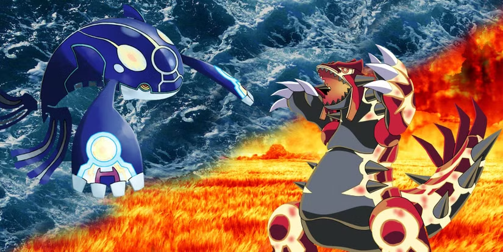

O Trio Climático — Rayquaza , Kyogre e Groudon — sãoPokémon lendários "superantigos" da região de Hoenn, que personificam a terra, o mar e o céu.Groudon cria terra com sol intenso, Kyogre expande os mares com chuva e Rayquaza mantém o equilíbrio interrompendo suas batalhas cataclísmicas
Groudon (Terra): Criado a partir do magma, representa a terra e a expande através da evaporação em larga escala.Kyogre (Água): Nascido da intensa pressão da água, representa o mar e o expande através de chuvas intensas.Rayquaza (Dragão/Voador):
Segundo os mitos do mundo Pokémon, o universo foi criado quando Arceus eclodiu de um ovo no vazio. Arceus formou o trio da criação — composto por Dialga, Palkia e Giratina — e os guardiões dos lagos, que consistem em Mesprit, Uxie e Azelf. Dialga e Palkia, que controlam o tempo e o espaço respectivamente, criaram o mundo Pokémon antes de retornarem às suas dimensões. Nas profundezas das fossas subaquáticas, as pressões extremas eventualmente formaram Kyogre, uma criatura do tipo Água puro. Na Terra, Groudon, o Pokémon do tipo Terra, foi formado.
Kyogre criou os oceanos enquanto Groudon criou as massas de terra. Os dois eventualmente cruzaram seus caminhos, levando a uma terrível guerra pela dominância. Kyogre deseja um mundo de água, enquanto Groudon almeja um mundo de terra, e a batalha entre eles tem o potencial de destruir o planeta. Felizmente, Rayquaza é formado a partir dos minerais da camada de ozônio e acalma os titãs em conflito. Kyogre e Groudon recuam, e a Orbe Vermelha e a Orbe Azul são criadas para impedir o despertar do Pokémon lendário. Com a paz restaurada, Rayquaza pode descansar novamente no Pilar Celeste.
